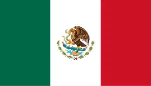

P1- Pagina Web
Mes Patrio
Septiembre es el Mes Patrio de México, lleno de historia, tradiciones y orgullo nacional. En este mes recordamos la Independencia y a los personajes que lucharon por la libertad de nuestro país.
